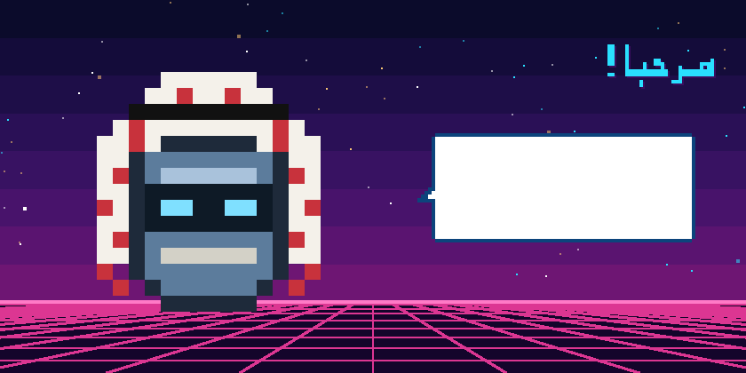
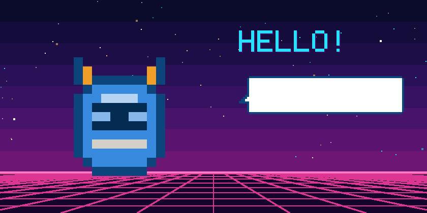

روبوت بكسلي صغير بالشماغ والعقال يعيش على سطح المكتب. يفهم كلامك بالعربية ويرد عليك بالعربية، وينفّذ المهام على جهازك بعد موافقتك، ويدوّن ملاحظات اجتماعاتك.
macOS 26 أو أحدث · معالجات Apple وIntel · مفتوح المصدر (MIT) · العقل: Claude Code

اضغط على زميل أو على ⌃⌥Z، وقل ما تريد، وسيجيبك بالعربية في فقاعة كلام وبصوت مسموع.
«ذكّرني أتصل بأمي الساعة 6»، «ارفع الصوت»، «افتح Spotify». كل إجراء يطلب منك السماح أو الرفض أولاً.
«انظر إلى ملفي في LinkedIn، ماذا أحسّن؟» يلتقط صورة واحدة فقط وعندما تطلب.
يلاحظ اجتماعات Teams وZoom وGoogle Meet ويسألك قبل التدوين، ثم يكتب ملخصاً وقرارات ومهام. (الملاحظات بالإنجليزية حالياً.)
ميزة اختيارية: عندما يُطرح عليك سؤال في الاجتماع، تظهر لك إجابة مقترحة بهدوء في نافذة الملاحظات.
يرمش ويلتفت، ويقفز فرحاً عندما تخطر له فكرة، ويأخذ قيلولة عندما تبتعد.

زولت ⚡ هو الأخ الأزرق لزميل، ويتحدث الإنجليزية بصوت روبوتات الثمانينيات. يمكنك تشغيل الاثنين معاً على الجهاز نفسه، ولكل منهما اختصاره وإعداداته.
claude مرة واحدة وسجّل الدخول:
curl -fsSL https://claude.ai/install.sh | bash.env.